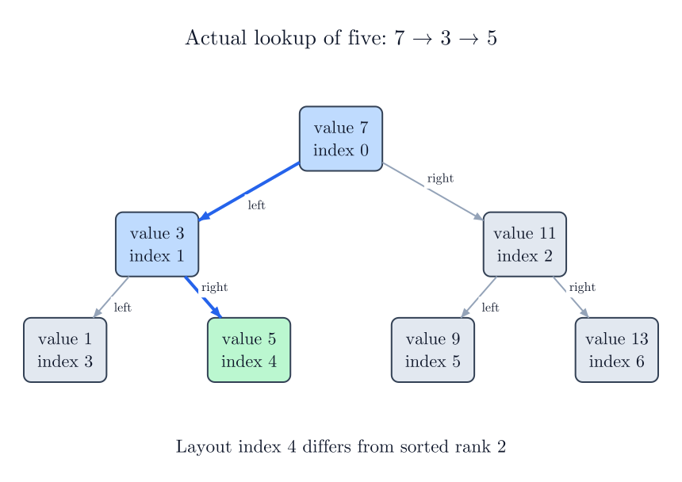
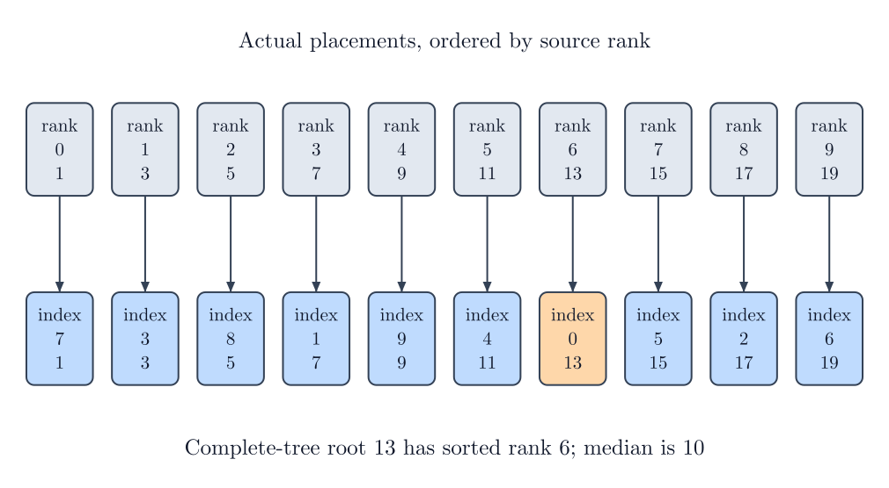
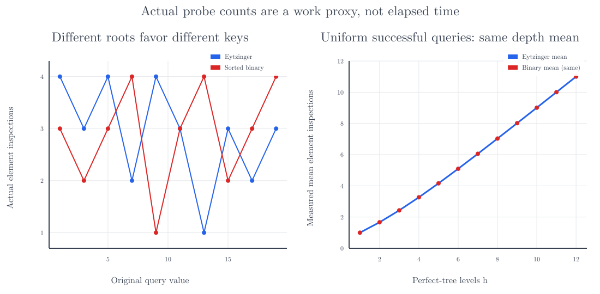
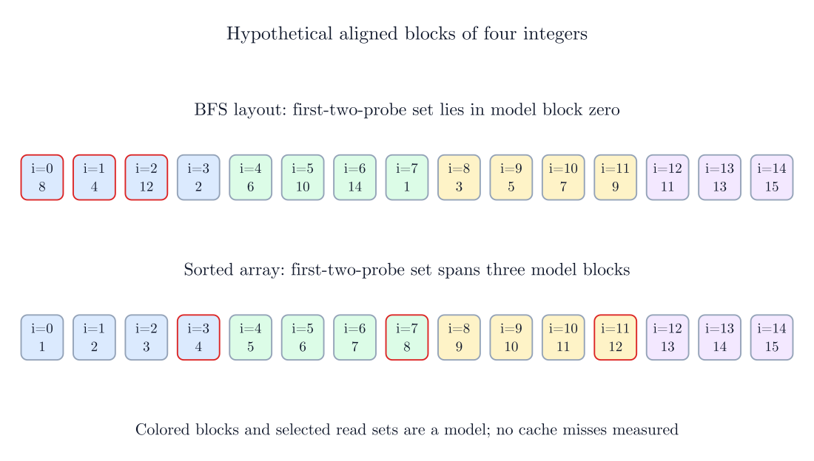
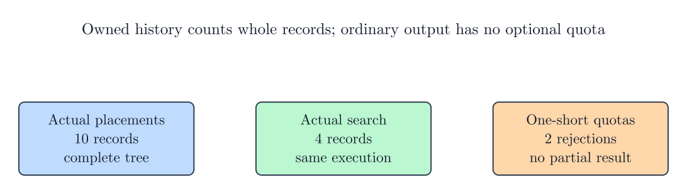

Eytzinger Search: Actual Tree Placements and Probe Paths
Abstract
Find an integer in a static sorted collection while changing how its search tree is stored. Eytzinger order places a complete binary search tree breadth first in one array. We begin with seven values and inspect a real three-probe lookup, then retain the original ten-value example and its five queries. Native traces record actual construction assignments and actual search transitions. Complete and incomplete trees, duplicate keys, a hypothetical block model and explicit capture limits distinguish element inspections from comparisons, cache misses and elapsed time. No local search loop reconstructs an explanatory path.
A seven-value tree and an actual lookup
For [1,3,5,7,9,11,13], the native layout is [7,3,11,1,5,9,13]. Using zero-based array positions, the root is zero and its children are 2i+1 and 2i+2 when those positions exist. Searching for five reads seven, three, then five: positions zero, one, four. Equality is checked before deciding which child to take. The returned index four belongs to the layout, whereas the value's original sorted rank is two.
The program renders positions from actual assignment records and highlights only the recorded search probes. Tree edges show the implicit array topology; they do not replay the search. Gray nodes were not read by this query.
#include <dm/dm.hpp>
int main(){
std::filesystem::create_directories("build");
const auto built=dm::algorithms::eytzinger_layout_trace({1,3,5,7,9,11,13});const auto walk=dm::algorithms::eytzinger_search_trace(built.layout,5);
std::print("| probe | layout index | read value | decision | next index |\n| ---: | ---: | ---: | :--- | ---: |\n");
std::set<std::size_t> visited;for(std::size_t j=0;j<walk.probes.size();++j){const auto& p=walk.probes[j];visited.insert(p.index);std::print("| {} | {} | {} | {} | {} |\n",j+1,p.index,p.value,p.direction==0?"match":p.direction<0?"left":"right",p.next_index);}
std::print("\nTiny lookup: found {}; layout index {}; probes {}; captured records {}.\n",walk.result.found,walk.result.index,walk.result.probes,walk.captured_entries);
dm::graphics::Diagram g(58,1100);dm::graphics::DiagramNodeStyle box;box.width=1.8;box.height=1.1;box.font_size=22;
for(const auto& p:built.placements){const auto depth=std::bit_width(p.layout_index+1)-1;box.fill=visited.contains(p.layout_index)?dm::graphics::RGB{191,219,254}:dm::graphics::RGB{226,232,240};if(static_cast<std::ptrdiff_t>(p.layout_index)==walk.result.index)box.fill={187,247,208};g.node(std::to_string(p.layout_index),{2.*p.sorted_index,-2.3*depth},std::format("value {}\nindex {}",p.value,p.layout_index),box);}
for(std::size_t i=1;i<built.layout.size();++i){dm::graphics::DiagramStroke stroke;stroke.color=visited.contains(i)&&visited.contains((i-1)/2)?dm::graphics::RGB{37,99,235}:dm::graphics::RGB{148,163,184};stroke.width=visited.contains(i)?4:2;g.edge(std::to_string((i-1)/2),std::to_string(i),i%2?"left":"right",stroke);}
g.text({6,2.2},"Actual lookup of five: 7 → 3 → 5",27).text({6,-6.7},"Layout index 4 differs from sorted rank 2",23).save_svg("build/eytzinger_tiny.svg");
if(!walk.result.found||walk.result.index!=4||walk.result.probes!=3)throw std::runtime_error("tiny lookup failed");
}| probe | layout index | read value | decision | next index |
|---|---|---|---|---|
| 1 | 0 | 7 | left | 1 |
| 2 | 1 | 3 | right | 4 |
| 3 | 4 | 5 | match | -1 |
Tiny lookup: found true; layout index 4; probes 3; captured records 3.

Why construction and search agree
Fix the complete-tree topology first, filling its last level from left to right. During an in-order traversal, assign successive sorted source values. Every left-subtree assignment therefore precedes its parent, and every right-subtree assignment follows it. With nondecreasing inputs, left values are at most the parent and right values at least the parent. A smaller query cannot occur in the right subtree; a larger query cannot occur in the left. On equality, returning that node is a valid membership result. For duplicates, this chooses the first equal node encountered, not the first sorted occurrence.
Each unsuccessful transition advances one level, and a missing chosen child terminates. A complete tree of N>0 nodes has floor(log2 N)+1 levels, so a query reads at most that many elements. Ordinary search uses constant auxiliary state. Construction makes N assignments and uses O(log(N+1)) recursion plus its N-value output. Trace calls share those actual kernels and retain their actual events; ordinary calls allocate no optional history.
Sortedness and tree order are unchecked preconditions. Supply a nondecreasing vector to eytzinger_layout and search its result. Passing a sorted array directly to eytzinger_search generally supplies the wrong tree representation. This is a static layout: arbitrary insertion or an in-place value edit can invalidate the ordering. Independent calls share no mutable state; concurrent readers require that their borrowed input remain unchanged.
Preserve the original ten values, but correct the median claim
The original input is [1,3,...,19]. Its layout remains [13,7,17,3,11,15,19,1,5,9], and its original queries are 13,9,1,19,8. The actual assignment records below expose the source rank of every node. For ten values the complete tree has six nodes in its left subtree, so its root has sorted rank six and value thirteen. Thirteen is not the median of this input; the two central values are nine and eleven.
More generally, for N≥2 set h=floor(log2 N), p=2^h and r=N−(p−1). The left subtree contains
nodes: its full upper levels contribute p/2−1 and it receives the first p/2 available last-level nodes. The root's zero-based source rank is L. A perfect tree has a central root, but an incomplete last level can shift it. This corrects the old report's median claim without changing the layout.
#include <dm/dm.hpp>
int main(){
std::filesystem::create_directories("build");
const std::vector<int> sorted{1,3,5,7,9,11,13,15,17,19};const auto built=dm::algorithms::eytzinger_layout_trace(sorted);
std::print("Original layout:");for(int value:built.layout)std::print(" {}",value);std::print("\n\n| actual assignment | sorted rank | layout index | value |\n| ---: | ---: | ---: | ---: |\n");
for(std::size_t j=0;j<built.placements.size();++j){const auto& p=built.placements[j];std::print("| {} | {} | {} | {} |\n",j+1,p.sorted_index,p.layout_index,p.value);}
std::print("\n| original key | found | layout index | probes |\n| ---: | :--- | ---: | ---: |\n");for(int key:{13,9,1,19,8}){const auto r=dm::algorithms::eytzinger_search(built.layout,key);std::print("| {} | {} | {} | {} |\n",key,r.found,r.index,r.probes);}
const auto walk=dm::algorithms::eytzinger_search_trace(built.layout,9);std::print("\nActual walk for nine:");for(const auto& p:walk.probes)std::print(" {}:{}",p.index,p.value);std::print("\nRoot source rank 6; root value {}; central sorted values {} and {}.\n",built.layout[0],sorted[4],sorted[5]);
dm::graphics::Diagram g(54,1100);dm::graphics::DiagramNodeStyle box;box.width=1.4;box.height=1.2;box.font_size=21;
g.text({8.1,2.3},"Actual placements, ordered by source rank",25);
for(const auto& p:built.placements){box.fill={226,232,240};g.node("source"+std::to_string(p.sorted_index),{1.8*p.sorted_index,0},std::format("rank {}\n{}",p.sorted_index,p.value),box);box.fill=p.layout_index==0?dm::graphics::RGB{254,215,170}:dm::graphics::RGB{191,219,254};g.node("target"+std::to_string(p.layout_index),{1.8*p.sorted_index,-4},std::format("index {}\n{}",p.layout_index,p.value),box);g.edge("source"+std::to_string(p.sorted_index),"target"+std::to_string(p.layout_index));}
g.text({8.1,-6.3},"Complete-tree root 13 has sorted rank 6; median is 10",25).save_svg("build/eytzinger_original.svg");
if(built.layout!=std::vector<int>{13,7,17,3,11,15,19,1,5,9}||walk.result.index!=9||walk.result.probes!=4)throw std::runtime_error("original example changed");
}Original layout: 13 7 17 3 11 15 19 1 5 9
| actual assignment | sorted rank | layout index | value |
|---|---|---|---|
| 1 | 0 | 7 | 1 |
| 2 | 1 | 3 | 3 |
| 3 | 2 | 8 | 5 |
| 4 | 3 | 1 | 7 |
| 5 | 4 | 9 | 9 |
| 6 | 5 | 4 | 11 |
| 7 | 6 | 0 | 13 |
| 8 | 7 | 5 | 15 |
| 9 | 8 | 2 | 17 |
| 10 | 9 | 6 | 19 |
| original key | found | layout index | probes |
|---|---|---|---|
| 13 | true | 0 | 1 |
| 9 | true | 9 | 4 |
| 1 | true | 7 | 4 |
| 19 | true | 6 | 3 |
| 8 | false | -1 | 4 |
Actual walk for nine: 0:13 1:7 4:11 9:9 Root source rank 6; root value 13; central sorted values 9 and 11.

Probe counts depend on the query, not just the representation
A probe means one inspected element. Equality-first search may perform both an equality test and an ordering test for that read. Neither the probe counter nor the plot measures primitive comparisons, CPU cycles, or cache misses. The first panel below compares both native searches on every original key: Eytzinger's root thirteen takes one read, whereas ordinary binary search's lower-midpoint root nine takes one read. Each representation favors its own shallow nodes. The trace APIs supply both actual counts.
For a perfect tree with h levels and N=2h−1 distinct keys, level d has 2d keys that require d+1 reads. Under a uniform successful-key workload,
The complete native checks below match that exact numerator for both searches. An absent query descends h levels in a perfect tree. Equal average read counts can accompany different physical access sequences; one does not prove equal runtime, nor does changing the layout guarantee a reduction in reads.
#include <dm/dm.hpp>
int main(){
std::filesystem::create_directories("build");
auto per_key=dm::graphics::RPlot::create(),averages=dm::graphics::RPlot::create();const std::vector<int> a{1,3,5,7,9,11,13,15,17,19};const auto layout=dm::algorithms::eytzinger_layout(a);std::vector<double> keys,ep,bp;
std::print("| original key | Eytzinger probes | sorted binary probes |\n| ---: | ---: | ---: |\n");for(int key:a){const auto e=dm::algorithms::eytzinger_search_trace(layout,key);const auto b=dm::algorithms::binary_search_trace(a,key);keys.push_back(key);ep.push_back(e.result.probes);bp.push_back(b.result.probes);std::print("| {} | {} | {} |\n",key,e.result.probes,b.result.probes);}
per_key.line(keys,ep,"Eytzinger",{37,99,235},2).points(keys,ep,"",{37,99,235},4).line(keys,bp,"Sorted binary",{220,38,38},2).points(keys,bp,"",{220,38,38},4).title("Different roots favor different keys").x_label("Original query value").y_label("Actual element inspections");
std::vector<double> levels,em,bm;std::print("\n| levels h | values N | measured Eytzinger mean | measured binary mean | exact successful total | absent probes |\n| ---: | ---: | ---: | ---: | ---: | ---: |\n");
for(unsigned h=1;h<=12;++h){const std::size_t n=(std::size_t{1}<<h)-1;std::vector<int> sorted(n);std::iota(sorted.begin(),sorted.end(),0);const auto l=dm::algorithms::eytzinger_layout(sorted);std::size_t es=0,bs=0;for(int key:sorted){es+=dm::algorithms::eytzinger_search(l,key).probes;bs+=dm::algorithms::binary_search(sorted,key).probes;}const auto exact=(h-1)*(std::size_t{1}<<h)+1;const auto absent=dm::algorithms::eytzinger_search(l,-1);if(es!=exact||bs!=exact||absent.probes!=h)throw std::runtime_error("perfect-tree count formula failed");levels.push_back(h);em.push_back(double(es)/n);bm.push_back(double(bs)/n);if(h==1||h==3||h==6||h==9||h==12)std::print("| {} | {} | {:.6f} | {:.6f} | {} | {} |\n",h,n,double(es)/n,double(bs)/n,exact,absent.probes);}
averages.line(levels,em,"Eytzinger mean",{37,99,235},3).points(levels,bm,"Binary mean (same)",{220,38,38},4).title("Uniform successful queries: same depth mean").x_label("Perfect-tree levels h").y_label("Measured mean element inspections");dm::graphics::RLayout::create(1,2).add(per_key).add(averages).size(1100,540).title("Actual probe counts are a work proxy, not elapsed time").fit_panels().save_svg("build/eytzinger_counts.svg");
}| original key | Eytzinger probes | sorted binary probes |
|---|---|---|
| 1 | 4 | 3 |
| 3 | 3 | 2 |
| 5 | 4 | 3 |
| 7 | 2 | 4 |
| 9 | 4 | 1 |
| 11 | 3 | 3 |
| 13 | 1 | 4 |
| 15 | 3 | 2 |
| 17 | 2 | 3 |
| 19 | 3 | 4 |
| levels h | values N | measured Eytzinger mean | measured binary mean | exact successful total | absent probes |
|---|---|---|---|---|---|
| 1 | 1 | 1.000000 | 1.000000 | 1 | 1 |
| 3 | 7 | 2.428571 | 2.428571 | 17 | 3 |
| 6 | 63 | 5.095238 | 5.095238 | 321 | 6 |
| 9 | 511 | 8.017613 | 8.017613 | 4097 | 9 |
| 12 | 4095 | 11.002930 | 11.002930 | 45057 | 12 |

What breadth-first packing actually promises
The first h complete levels occupy the contiguous prefix of 2^h−1 values. A node's two existing children are adjacent. These are layout facts; a search follows one child at a time and need not remain within one physical cache line. Actual cache behavior also depends on element width, base alignment, line size, working-set size, repeated queries, eviction, speculation and prefetching.
To visualize only the packing fact, the next program uses fifteen values and hypothetical aligned blocks of four integers. It collects the first two actual probes over all successful queries. Eytzinger uses positions 0,1,2, all in model block zero; sorted binary search uses 3,7,11, in three model blocks. These sets combine different queries. They are neither a single lookup's cache misses nor a cache simulation, and the four-integer block is an illustrative assumption. For example, all fifteen four-byte integers may fit in one aligned 64-byte line.
Khuong and Morin study RAM-resident lower-bound queries and tuned implementations, including conditional moves and prefetching. Their results depend on sizes and machines. Our equality-first exact-match kernel implements neither optimization, and no reported speedup is transferred from that study. Building the layout costs O(N); retain and reuse it across queries when evaluating that setup tradeoff.
#include <dm/dm.hpp>
int main(){
std::filesystem::create_directories("build");
std::vector<int> sorted(15);std::iota(sorted.begin(),sorted.end(),1);const auto l=dm::algorithms::eytzinger_layout(sorted);std::set<std::size_t> ei,bi,eb,bb;
for(int key:sorted){const auto e=dm::algorithms::eytzinger_search_trace(l,key);const auto b=dm::algorithms::binary_search_trace(sorted,key);for(std::size_t j=0;j<std::min<std::size_t>(2,e.probes.size());++j){ei.insert(e.probes[j].index);eb.insert(e.probes[j].index/4);}for(std::size_t j=0;j<std::min<std::size_t>(2,b.probes.size());++j){bi.insert(b.probes[j].index);bb.insert(b.probes[j].index/4);}}
std::print("Model: {} values; four integers per hypothetical aligned block; actual int width {} bytes.\n",sorted.size(),sizeof(int));std::print("Eytzinger first-two-probe positions:");for(auto i:ei)std::print(" {}",i);std::print("; model blocks {}.\n",eb.size());std::print("Sorted binary first-two-probe positions:");for(auto i:bi)std::print(" {}",i);std::print("; model blocks {}.\n",bb.size());
dm::graphics::Diagram g(57,1100);dm::graphics::DiagramNodeStyle box;box.width=1.05;box.height=1.1;box.font_size=20;box.padding=6;const std::vector<dm::graphics::RGB> colours{{219,234,254},{220,252,231},{254,243,199},{243,232,255}};
for(int row=0;row<2;++row){const auto& values=row?sorted:l;const auto& selected=row?bi:ei;g.text({9.1,1.7-4.*row},row?"Sorted array: first-two-probe set spans three model blocks":"BFS layout: first-two-probe set lies in model block zero",25);for(std::size_t i=0;i<values.size();++i){box.fill=colours[i/4];box.border=selected.contains(i)?dm::graphics::RGB{220,38,38}:dm::graphics::RGB{148,163,184};g.node(std::format("{}:{}",row,i),{1.3*i,-4.*row},std::format("i={}\n{}",i,values[i]),box);}}
g.text({9.1,3.6},"Hypothetical aligned blocks of four integers",27).text({9.1,-6.3},"Colored blocks and selected read sets are a model; no cache misses measured",23).save_svg("build/eytzinger_packing.svg");if(eb.size()!=1||bb.size()!=3)throw std::runtime_error("packing model failed");
}Model: 15 values; four integers per hypothetical aligned block; actual int width 4 bytes. Eytzinger first-two-probe positions: 0 1 2; model blocks 1. Sorted binary first-two-probe positions: 3 7 11; model blocks 3.

Duplicates, integer endpoints, ownership and record quotas
All int keys are supported because search compares values without subtracting them. On ten equal values, a match is the root at layout position zero in one probe, although that root came from sorted rank six. The original sorted rank is available from construction provenance, not from SearchResult::index. Empty inputs give an absent search with zero probes and empty traces.
Optional capture counts whole records: layout history C=N placement records; search history C=P probe records. Output layout values, metadata, capacities, allocator bytes and runtime temporaries are excluded, so C is not peak memory. The default quota is one million records and zero disables only that quota. Known layout capture is checked before allocation; the next search record is admitted before its node read. A quota exception returns no partial trace. Ordinary calls retain no optional history or quota and remain usable for a layout exceeding the default history cap. Returned snapshots own their values, so later input changes cannot alter the historical record.
#include <dm/dm.hpp>
int main(){
std::filesystem::create_directories("build");
const auto minimum=std::numeric_limits<int>::min(),maximum=std::numeric_limits<int>::max();const std::vector<int>a{minimum,minimum,-1,0,1,maximum};const auto built=dm::algorithms::eytzinger_layout_trace(a);
std::print("| boundary key | found | layout index | actual probes |\n| ---: | :--- | ---: | ---: |\n");for(int key:{minimum,minimum+1,-1,0,1,maximum-1,maximum}){const auto t=dm::algorithms::eytzinger_search_trace(built.layout,key);if(t.result.found!=std::binary_search(a.begin(),a.end(),key))throw std::runtime_error("boundary membership failed");std::print("| {} | {} | {} | {} |\n",key,t.result.found,t.result.index,t.result.probes);}
const auto duplicate=dm::algorithms::eytzinger_search_trace(dm::algorithms::eytzinger_layout(std::vector<int>(10,7)),7);std::vector<int> sorted{1,3,5,7,9,11,13,15,17,19};const auto l=dm::algorithms::eytzinger_layout_trace(sorted,10);const auto exact=dm::algorithms::eytzinger_search_trace(l.layout,9,4);int rejected=0;try{(void)dm::algorithms::eytzinger_layout_trace(sorted,9);}catch(const std::length_error&){++rejected;}try{(void)dm::algorithms::eytzinger_search_trace(l.layout,9,3);}catch(const std::length_error&){++rejected;}
auto changed=l.layout;const auto owned=dm::algorithms::eytzinger_search_trace(changed,9);changed[0]=99;const auto disabled=dm::algorithms::eytzinger_search_trace(l.layout,9,0),empty=dm::algorithms::eytzinger_search_trace({},9,1);std::vector<int> large(1000001,7);const auto ordinary=dm::algorithms::eytzinger_layout(large);bool large_quota=false;try{(void)dm::algorithms::eytzinger_layout_trace(large);}catch(const std::length_error&){large_quota=true;}
std::print("\nTen duplicate sevens: layout index {}; probes {}; first decision {}.\n",duplicate.result.index,duplicate.result.probes,duplicate.probes.front().direction);std::print("Capture exact: layout {}; search {}; disabled search {}; one-short rejections {}/2.\n",l.captured_entries,exact.captured_entries,disabled.captured_entries,rejected);std::print("Owned first read remains {}; changed input first value {}; empty probes {}.\n",owned.probes.front().value,changed[0],empty.result.probes);std::print("Ordinary large layout length {}; default optional history rejects {}.\n",ordinary.size(),large_quota);
dm::graphics::Diagram g(58,1100);dm::graphics::DiagramNodeStyle box;box.width=4.8;box.height=2;box.font_size=23;box.fill={191,219,254};g.node("placement",{0,0},std::format("Actual placements\n{} records\ncomplete tree",l.captured_entries),box);box.fill={187,247,208};g.node("probe",{6.5,0},std::format("Actual search\n{} records\nsame execution",exact.captured_entries),box);box.fill={254,215,170};g.node("quota",{13,0},std::format("One-short quotas\n{} rejections\nno partial result",rejected),box).text({6.5,3},"Owned history counts whole records; ordinary output has no optional quota",25).save_svg("build/eytzinger_limits.svg");if(rejected!=2||!large_quota||owned.probes.front().value!=13||empty.result.probes!=0)throw std::runtime_error("capture/ownership controls failed");
}| boundary key | found | layout index | actual probes |
|---|---|---|---|
| -2147483648 | true | 1 | 2 |
| -2147483647 | false | -1 | 3 |
| -1 | true | 4 | 3 |
| 0 | true | 0 | 1 |
| 1 | true | 5 | 3 |
| 2147483646 | false | -1 | 3 |
| 2147483647 | true | 2 | 2 |
Ten duplicate sevens: layout index 0; probes 1; first decision 0. Capture exact: layout 10; search 4; disabled search 4; one-short rejections 2/2. Owned first read remains 13; changed input first value 99; empty probes 0. Ordinary large layout length 1000001; default optional history rejects true.

References
- Paul-Virak Khuong and Pat Morin (2017 revision), Array Layouts for Comparison-Based Searching, arXiv:1509.05053, section 3.2. [Primary paper and revision history](https://arxiv.org/abs/1509.05053), [full paper](https://arxiv.org/pdf/1509.05053). The native API uses the complete-tree BFS layout with branchy exact membership; the paper's query interface and tuned implementations differ as explained above.